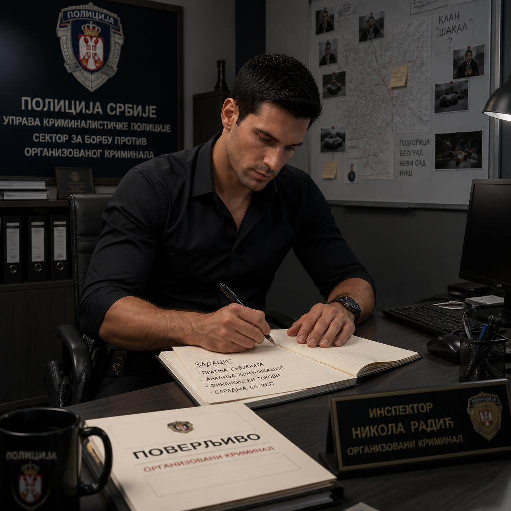

Kontrolna tabla
Predmet KT256/26 · Istraga ubistva Milana Balovića

Inspektor Nikola RadićOvlašćeni pristup
AKTIVNA ISTRAGAPredmet KT256/26 · Stepen tajnosti: POVERLJIVO
STATUS PREDMETAU TOKUOtvoren 26.04.2026.
EVIDENTIRANA LICA31 žrtva · 2 operativno interesantna
DOKUMENTI5Dosijei i službeni akti
DIGITALNI IZVORI3Telefon, šifrovana komunikacija i anonimni kanal
Brzi pristup
01
Telefon Milana Balovića
Digitalna forenzika uređaja. PIN i sadržaj telefona.
OTVORI MODUL → 02Anonimni komunikacioni kanal
Zaštićena prepiska i preuzimanje dostavljenih dokaza.
OTVORI MODUL → 03Kriminalistički GIS
Pretraga koordinata i lociranje mesta pronalaska tela.
OTVORI MODUL → 04Optužnica i suđenje
Završna obrada predmeta i prilaganje prikupljenih dokaza.
OTVORI MODUL →Poslednje evidentirane aktivnosti
Obdukcioni izveštaj zaveden u predmetInstitut za sudsku medicinu
Izvršena obdukcija Milana BalovićaForenzika / sudska medicina
Završen uviđaj u restoranu „Kaldrma“Kriminalističko-tehnička ekipa
Službena dokumentacija
Dokumenti povezani sa predmetom KT256/26
Lica i operativni dosijei
Centralna evidencija lica povezanih sa predmetom
Digitalna forenzika
Pristup izdvojenim digitalnim uređajima i komunikacijama
Mobilni telefon Milana Balovića
Zaključan Android uređaj · izdvojen na forenzičku obradu
Zaplenjena šifrovana komunikacija
Mobilni uređaj Aleksandra Ilića · sadržaj nije moguće pročitati standardnim alatima
Anonimni zaštićeni kanal
Komunikacija sa nepoznatim izvorom i razmena dokaza
Operativni moduli
Specijalizovani sistemi povezani sa predmetom
Praćenje medija
Medijske objave evidentirane u vezi sa predmetom KT256/26
NAPOMENAMedijski sadržaji ne predstavljaju službeno utvrđene činjenice i mogu sadržati nepotvrđene ili netačne navode.